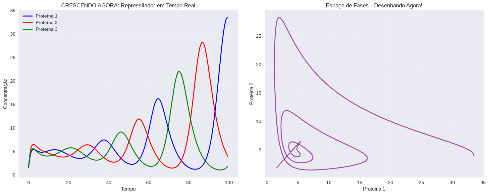
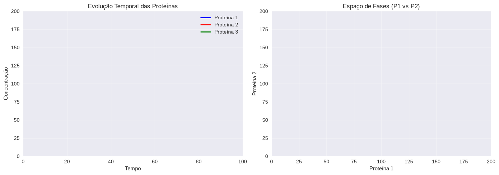

%matplotlib widget# Importando as ferramentas necessárias
import numpy as np
from scipy.integrate import solve_ivp
import matplotlib.pyplot as plt
# Para tornar os gráficos mais bonitos
plt.style.use('seaborn-v0_8')# DEFININDO AS EQUAÇÕES DO REPRESSILADOR
def repressilator(t, y, alpha, n, beta):
"""
Sistema de equações diferenciais do Repressilador
t: tempo
y: variáveis [m1, m2, m3, p1, p2, p3]
alpha, n, beta: parâmetros do modelo
"""
m1, m2, m3, p1, p2, p3 = y
# Equações para o mRNA (m)
dm1_dt = -m1 + alpha / (1 + p3**n)
dm2_dt = -m2 + alpha / (1 + p1**n)
dm3_dt = -m3 + alpha / (1 + p2**n)
# Equações para as proteínas (p)
dp1_dt = -beta * (p1 - m1)
dp2_dt = -beta * (p2 - m2)
dp3_dt = -beta * (p3 - m3)
return [dm1_dt, dm2_dt, dm3_dt, dp1_dt, dp2_dt, dp3_dt]# PARÂMETROS DO MODELO (você pode alterar esses valores!)
alpha = 100 # Força de produção
n = 2 # Coeficiente de Hill (cooperatividade)
beta = 0.2 # Razão entre degradação de proteína e mRNA
# Condições iniciais: [m1, m2, m3, p1, p2, p3]
y0 = [0.1, 0.2, 0.3, 0.1, 0.2, 0.3]
# Tempo de simulação
t_span = (0, 200)
t_eval = np.linspace(0, 200, 1000)# RESOLVENDO AS EQUAÇÕES DIFERENCIAIS
print("Resolvendo as equações do repressilador...")
solution = solve_ivp(repressilator, t_span, y0, args=(alpha, n, beta),
t_eval=t_eval, method='RK45')
print("Simulação concluída!")Resolvendo as equações do repressilador...
Simulação concluída!# CRIANDO O GRÁFICO ANIMADO
from matplotlib.animation import FuncAnimation
from IPython.display import HTML
# Configuração da figura
fig, (ax1, ax2) = plt.subplots(2, 1, figsize=(12, 8))
# Extraindo os resultados
t = solution.t
m1, m2, m3, p1, p2, p3 = solution.y
# Plot 1: Proteínas ao longo do tempo
lines_p = []
for i, (data, label) in enumerate([(p1, 'Proteína 1 (LacI)'),
(p2, 'Proteína 2 (TetR)'),
(p3, 'Proteína 3 (λ cI)')]):
line, = ax1.plot(t, data, label=label, linewidth=2)
lines_p.append(line)
ax1.set_ylabel('Concentração de Proteína')
ax1.set_title('Repressilador - Dinâmica Temporal')
ax1.legend()
ax1.grid(True, alpha=0.3)
# Plot 2: Espaço de fases (Proteína 1 vs Proteína 2)
phase_line, = ax2.plot([], [], 'r-', linewidth=1, alpha=0.7)
ax2.set_xlabel('Proteína 1')
ax2.set_ylabel('Proteína 2')
ax2.set_title('Espaço de Fases: Proteína 1 vs Proteína 2')
ax2.grid(True, alpha=0.3)
ax2.set_xlim(min(p1), max(p1))
ax2.set_ylim(min(p2), max(p2))
def animate(frame):
# Atualizar o espaço de fases até o frame atual
phase_line.set_data(p1[:frame], p2[:frame])
return phase_line,
# Criar a animação
anim = FuncAnimation(fig, animate, frames=len(t), interval=20, blit=True)
plt.tight_layout()
plt.show()
# Para salvar a animação (opcional)
# anim.save('repressilador.gif', writer='pillow', fps=30)# ANÁLISE DAS OSCILAÇÕES
print("\n=== ANÁLISE DO COMPORTAMENTO OSCILATÓRIO ===")
# Encontrando picos nas oscilações da Proteína 1
from scipy.signal import find_peaks
peaks, _ = find_peaks(p1, height=np.mean(p1))
periods = np.diff(t[peaks])
if len(periods) > 0:
print(f"Número de oscilações completas: {len(periods)}")
print(f"Período médio: {np.mean(periods):.2f} unidades de tempo")
print(f"Amplitude média: {np.mean(p1[peaks]):.2f}")
else:
print("Sistema não está oscilando! Tente aumentar 'alpha'.")
=== ANÁLISE DO COMPORTAMENTO OSCILATÓRIO ===
Número de oscilações completas: 3
Período médio: 39.11 unidades de tempo
Amplitude média: 32.94# CRIANDO UMA ANIMAÇÃO QUE CRESCE DIANTE DOS OLHOS!
import matplotlib.pyplot as plt
import numpy as np
from matplotlib.animation import FuncAnimation
from IPython.display import HTML
import time
# Configuração da figura
fig, (ax1, ax2) = plt.subplots(1, 2, figsize=(15, 6))
# Dados da simulação
t = solution.t
m1, m2, m3, p1, p2, p3 = solution.y
# Setup dos gráficos vazios
# Gráfico 1: Proteínas ao longo do tempo
line1, = ax1.plot([], [], 'b-', label='Proteína 1 (LacI)', linewidth=2)
line2, = ax1.plot([], [], 'r-', label='Proteína 2 (TetR)', linewidth=2)
line3, = ax1.plot([], [], 'g-', label='Proteína 3 (λ cI)', linewidth=2)
ax1.set_xlim(0, max(t))
ax1.set_ylim(0, max(max(p1), max(p2), max(p3)) * 1.1)
ax1.set_xlabel('Tempo')
ax1.set_ylabel('Concentração')
ax1.set_title('REPRESSILADOR - Oscilações em Tempo Real')
ax1.legend()
ax1.grid(True, alpha=0.3)
# Gráfico 2: Espaço de fases
phase_line, = ax2.plot([], [], 'purple', linewidth=2, alpha=0.7)
current_point, = ax2.plot([], [], 'ro', markersize=8)
ax2.set_xlim(min(p1), max(p1))
ax2.set_ylim(min(p2), max(p2))
ax2.set_xlabel('Proteína 1')
ax2.set_ylabel('Proteína 2')
ax2.set_title('Espaço de Fases - Trajetória')
ax2.grid(True, alpha=0.3)
# Texto informativo
time_text = ax1.text(0.02, 0.98, '', transform=ax1.transAxes, fontsize=12,
verticalalignment='top', bbox=dict(boxstyle='round', facecolor='wheat', alpha=0.8))
plt.tight_layout()
# Função de animação
def animate(frame):
# Atualizar gráfico temporal
line1.set_data(t[:frame], p1[:frame])
line2.set_data(t[:frame], p2[:frame])
line3.set_data(t[:frame], p3[:frame])
# Atualizar espaço de fases
phase_line.set_data(p1[:frame], p2[:frame])
if frame > 0:
current_point.set_data([p1[frame-1]], [p2[frame-1]])
# Atualizar texto
time_text.set_text(f'Tempo: {t[frame-1] if frame > 0 else 0:.1f}\nFrame: {frame}/{len(t)}')
return line1, line2, line3, phase_line, current_point, time_text
# Criar a animação
print("Criando animação...")
anim = FuncAnimation(fig, animate, frames=len(t), interval=1, blit=True, repeat=True)
# Mostrar a animação
plt.close() # Previne que mostre o plot estático
HTML(anim.to_jshtml())Criando animação...import time
import matplotlib.pyplot as plt
import numpy as np
from scipy.integrate import solve_ivp # Import correto para solve_ivp
# Definição do sistema de equações do Repressilador
def repressilator(t, y, alpha, n, beta):
# y = [m1, m2, m3, p1, p2, p3]
m1, m2, m3, p1, p2, p3 = y
# Equações para os mRNAs e Proteínas (Elowitz & Leibler, 2000)
dm1_dt = -m1 + alpha / (1 + p3**n)
dm2_dt = -m2 + alpha / (1 + p1**n)
dm3_dt = -m3 + alpha / (1 + p2**n)
dp1_dt = -beta * (p1 - m1)
dp2_dt = -beta * (p2 - m2)
dp3_dt = -beta * (p3 - m3)
return [dm1_dt, dm2_dt, dm3_dt, dp1_dt, dp2_dt, dp3_dt]
# Parâmetros da simulação
alpha = 100
n = 2
beta = 0.2
# Configuração do gráfico
plt.ion()
fig, (ax1, ax2) = plt.subplots(1, 2, figsize=(15, 6))
t_data = []
p1_data, p2_data, p3_data = [], [], []
# Condições iniciais: [m1, m2, m3, p1, p2, p3]
y0 = [0.1, 0.2, 0.3, 0.1, 0.2, 0.3]
# Linhas dos gráficos
(line1,) = ax1.plot([], [], 'b-', label='Proteína 1', linewidth=2)
(line2,) = ax1.plot([], [], 'r-', label='Proteína 2', linewidth=2)
(line3,) = ax1.plot([], [], 'g-', label='Proteína 3', linewidth=2)
(phase_line,) = ax2.plot([], [], '-', color='purple', linewidth=2, alpha=0.7)
ax1.set_xlabel('Tempo')
ax1.set_ylabel('Concentração')
ax1.set_title('CRESCENDO AGORA: Repressilador em Tempo Real')
ax1.legend()
ax1.grid(True, alpha=0.3)
ax2.set_xlabel('Proteína 1')
ax2.set_ylabel('Proteína 2')
ax2.set_title('Espaço de Fases - Desenhando Agora!')
ax2.grid(True, alpha=0.3)
plt.tight_layout()
print('Iniciando simulação em tempo real...')
try:
for i in range(200):
t_current = i * 0.5
sol = solve_ivp(
repressilator,
[t_current, t_current + 0.5],
y0,
args=(alpha, n, beta),
method='RK45',
)
t_data.append(t_current)
p1_data.append(sol.y[3][-1])
p2_data.append(sol.y[4][-1])
p3_data.append(sol.y[5][-1])
y0 = [sol.y[j][-1] for j in range(6)]
# Atualiza gráficos
line1.set_data(t_data, p1_data)
line2.set_data(t_data, p2_data)
line3.set_data(t_data, p3_data)
phase_line.set_data(p1_data, p2_data)
# Reajuste dinâmico de limites
ax1.relim()
ax1.autoscale_view()
ax2.relim()
ax2.autoscale_view()
fig.canvas.draw()
fig.canvas.flush_events()
time.sleep(0.01)
except KeyboardInterrupt:
print('\nSimulação interrompida pelo usuário')
plt.ioff()
plt.show()Iniciando simulação em tempo real...
import matplotlib.animation as animation
import matplotlib.pyplot as plt
import numpy as np
from scipy.integrate import solve_ivp
# 1. Definição do sistema do Repressilador
def repressilator(t, y, alpha, n, beta):
m1, m2, m3, p1, p2, p3 = y
dm1_dt = -m1 + alpha / (1 + p3**n)
dm2_dt = -m2 + alpha / (1 + p1**n)
dm3_dt = -m3 + alpha / (1 + p2**n)
dp1_dt = -beta * (p1 - m1)
dp2_dt = -beta * (p2 - m2)
dp3_dt = -beta * (p3 - m3)
return [dm1_dt, dm2_dt, dm3_dt, dp1_dt, dp2_dt, dp3_dt]
# 2. Parâmetros do sistema
alpha = 100
n = 2
beta = 0.2
dt = 0.5 # Passo de tempo por frame
# Arrays de dados zerados
t_data = []
p1_data, p2_data, p3_data = [], [], []
# Condições iniciais [m1, m2, m3, p1, p2, p3]
y_current = [0.1, 0.2, 0.3, 0.1, 0.2, 0.3]
# 3. Configuração dos gráficos
fig, (ax1, ax2) = plt.subplots(1, 2, figsize=(14, 5))
(line1,) = ax1.plot([], [], 'b-', label='Proteína 1', linewidth=2)
(line2,) = ax1.plot([], [], 'r-', label='Proteína 2', linewidth=2)
(line3,) = ax1.plot([], [], 'g-', label='Proteína 3', linewidth=2)
(phase_line,) = ax2.plot([], [], '-', color='purple', linewidth=2, alpha=0.7)
ax1.set_xlim(0, 100)
ax1.set_ylim(0, 200)
ax1.set_xlabel('Tempo')
ax1.set_ylabel('Concentração')
ax1.set_title('Evolução Temporal das Proteínas')
ax1.legend(loc='upper right')
ax1.grid(True, alpha=0.3)
ax2.set_xlim(0, 200)
ax2.set_ylim(0, 200)
ax2.set_xlabel('Proteína 1')
ax2.set_ylabel('Proteína 2')
ax2.set_title('Espaço de Fases (P1 vs P2)')
ax2.grid(True, alpha=0.3)
plt.tight_layout()
# 4. Função de atualização chamada a cada frame
def update(frame):
global y_current
t_current = frame * dt
# Resolve o próximo intervalo de tempo
sol = solve_ivp(
repressilator,
[t_current, t_current + dt],
y_current,
args=(alpha, n, beta),
method='RK45',
)
# Atualiza as variáveis com o último ponto calculado
t_data.append(t_current)
p1_data.append(sol.y[3][-1])
p2_data.append(sol.y[4][-1])
p3_data.append(sol.y[5][-1])
y_current = [sol.y[i][-1] for i in range(6)]
# Atualiza os dados das linhas (redesenho ultra-rápido)
line1.set_data(t_data, p1_data)
line2.set_data(t_data, p2_data)
line3.set_data(t_data, p3_data)
phase_line.set_data(p1_data, p2_data)
# Ajusta eixos dinamicamente
ax1.set_xlim(0, max(100, t_current))
max_val = max(max(p1_data), max(p2_data), max(p3_data))
ax1.set_ylim(0, max_val * 1.1)
ax2.set_xlim(min(p1_data) * 0.9, max(p1_data) * 1.1)
ax2.set_ylim(min(p2_data) * 0.9, max(p2_data) * 1.1)
# Retorna os objetos atualizados
return line1, line2, line3, phase_line
# 5. Inicialização da animação
ani = animation.FuncAnimation(
fig,
update,
frames=400, # Quantidade de passos
interval=20, # Tempo entre frames em ms (50 FPS)
repeat=False,
blit=False, # Recomenda-se False ao redimensionar eixos dinamicamente
)
plt.show()